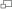

Vancouver Canucks
Idiomas sugeridos
- 日本語
- 한국어
- Deutsch
- English
- Español
- Italiano
- Artigo
- Discussão
- Ler
- Editar
- Ver histórico
Origem: Wikipédia, a enciclopédia livre.
Este artigo não cita fontes confiáveis. Ajude a inserir referências. Conteúdo não verificável pode ser removido. – Encontre fontes: ABW • Google ( N • L • A) (Julho de 2016)
O Vancouver Canucks é um time profissional de hóquei no gelo da cidade de Vancouver, British Columbia, Canadá. São membros da Divisão do Pacífico da Conferência Oeste da National Hockey League (NHL), mandam seus jogos na Rogers Arena.
História
Canucks recebendo o título da Conferência Oeste de 2011.
Os Canucks entraram na liga em 1970 como um time de expansão junto com o Buffalo Sabres. Em seus 38 anos de história na NHL, o time chegou à final da Stanley Cup três vezes, sendo derrotado por New York Islanders em 1982, New York Rangers em 1994 e Boston Bruins em 2011.
Os Canucks iniciaram a tradição da "Força da Toalha". Durante os playoffs da Stanley Cup em 1982, os Canucks estavam jogando contra os Chicago Black Hawks quando o seu treinador, Roger Nielson, farto com a performance dos árbitros no jogo, colocou uma toalha branca na ponta do taco de hóquei e o levantou, simulando uma rendição (bandeira branca).
 Rick Tocchet
Rick Tocchet